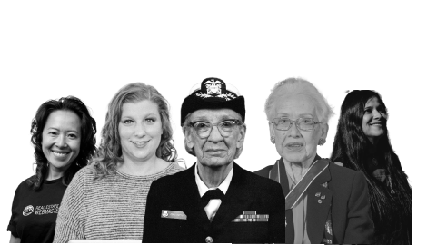
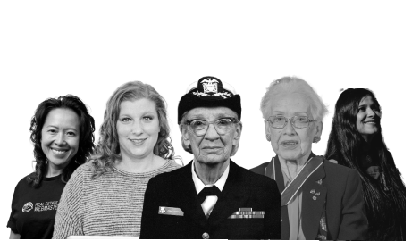

Spotlight: Pioneering Women in Tech world
Girls are capable of doing everything men are capable of doing. Sometimes they have more imagination than men”
- Katherine Johnson, NASA Mathematician

Girls are capable of doing everything men are capable of doing. Sometimes they have more imagination than men”
- Katherine Johnson, NASA Mathematician
Grace Hopper path to success was not straightforward.